代码复写| 小鼠与人类的空间表观单细胞图谱
原文：https://mp.weixin.qq.com/s?__biz=MzAwMzIzOTk5OQ==&mid=2247507501&idx=1&sn=94c2a38b98957a9526d510798f791419&chksm=9b3ca77dac4b2e6b40d37e73f54791d55a919f50992bf62ac557ecbac919fb6415dca468dba4#rd 合集：单细胞教程全收录 / 全文复现
评审环节开始！
** 写在前面**
首届“寻因杯”单细胞代码复写大赛正在展开评审环节，这次带来的是15号作品(由sgs小队提交)。本作品复写了题为"Spatial profiling of chromatin accessibility in mouse and human tissues"的论文.文章链接 ：https://www.ncbi.nlm.nih.gov/pmc/articles/PMC9452302/数据原始链接： 作者未提供 复现图片集锦 ：
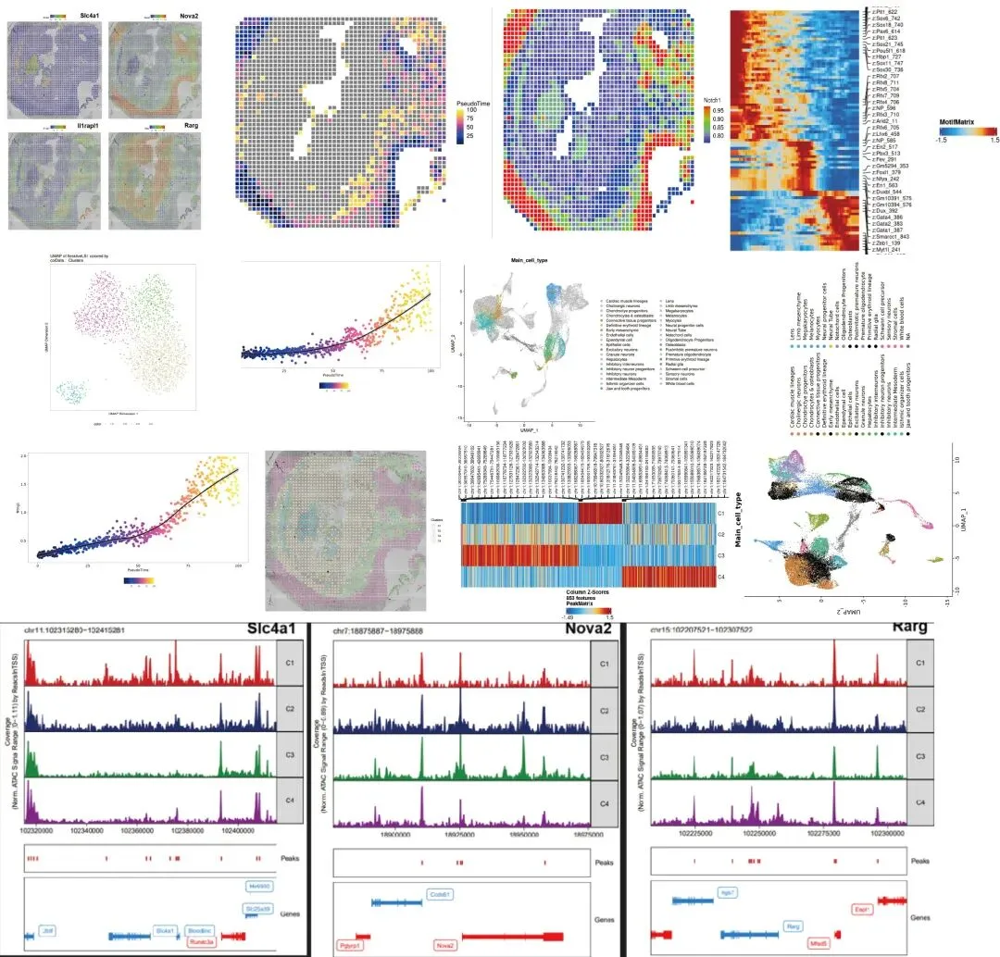
文献简介 ：
选择复现的文章图表于2022年发表于 Nature 杂志, 文章题目为《Spatial profiling of chromatin accessibility in mouse and human tissues》。在该文章中作者通过空间表观组学数据研究了小鼠和人类在不同发育时期（如E10、E11、E13、P21）的空间表观单细胞图谱, 我们挑选了感兴趣的E11时期(小鼠胚胎11天)进行图表复现。
一、复写内容
空间ATAC分析
导入依赖包
rm(list = ls())
library(ArchR)
library(Seurat)
library(grid)
set.seed(1234)
rm(list = ls())
threads = 8
addArchRThreads(threads = threads)
addArchRGenome("mm10")
## 定义相关全局变量
inputFiles <- "./GSM5238385_ME11_50um.fragments.tsv.gz"
sampleNames <- 'ME11_50um'
output_dir <- "E11_proj_in_tissue"
cellidents <- "ME11_50um#"
lsi_res <- c(0.2,0.3,0.4,0.5)
cluster_res <- 0.8
umpa_res <- 0.5
setwd("/your_path/data/ME11")
降维聚类分析
## Create ArchRProject
ArrowFiles <- createArrowFiles(
inputFiles = inputFiles,
sampleNames = sampleNames,
filterTSS = 0,
filterFrags = 0,
minFrags = 0,
maxFrags = 1e+07,
addTileMat = TRUE,
addGeneScoreMat = TRUE,
offsetPlus = 0,
offsetMinus = 0,
TileMatParams = list(tileSize = 5000)
)
ArrowFiles
proj <- ArchRProject(
ArrowFiles = ArrowFiles,
outputDirectory = sampleNames,
copyArrows = TRUE
)
proj
## Select pixels in tissue
meta.data <- as.data.frame(getCellColData(ArchRProj = proj))
meta.data['cellID_archr'] <- row.names(meta.data)
data.dir <- getwd()
assay = "Spatial"
filter.matrix = TRUE
slice = "slice1"
image <- Read10X_Image(image.dir = file.path(data.dir, "spatial"),
filter.matrix = filter.matrix)
#meta.data.spatial <- meta.data[paste0("ME11_50um#",row.names(image@coordinates)), ]
meta.data.spatial <- meta.data[paste0(cellidents,row.names(image@coordinates)), ]
proj_in_tissue <- proj[meta.data.spatial$cellID_archr, ]
proj_in_tissue
## Data normalization and dimensionality reduction
proj_in_tissue <- addIterativeLSI(
ArchRProj = proj_in_tissue,
useMatrix = "TileMatrix",
name = "IterativeLSI",
iterations = 2,
clusterParams = list(
resolution = lsi_res,
sampleCells = 10000,
n.start = 10),
varFeatures = 25000,
dimsToUse = 1:30,
force = TRUE)
proj_in_tissue <- addClusters(
input = proj_in_tissue,
reducedDims = "IterativeLSI",
method = "Seurat",
name = "Clusters",
resolution = cluster_res,
force = TRUE
)
proj_in_tissue <- addUMAP(
ArchRProj = proj_in_tissue,
reducedDims = "IterativeLSI",
name = "UMAP",
nNeighbors = 30,
minDist = umpa_res, # raw:0.5
metric = "cosine",
force = TRUE
)
plotEmbedding(ArchRProj = proj_in_tissue, colorBy = "cellColData", name = "Clusters", embedding = "UMAP", size = 1.5)
proj_in_tissue <- addImputeWeights(proj_in_tissue)
## Identify the marker genes for each cluster
markersGS <- getMarkerFeatures(
ArchRProj = proj_in_tissue,
useMatrix = "GeneScoreMatrix",
groupBy = "Clusters",
testMethod = "wilcoxon"
)
markerList_pos <- getMarkers(markersGS, cutOff = "FDR <= 0.05 & Log2FC >= 0.25")
markerGenes <- list()
for (i in seq_len(length(markerList_pos))) {
markerGenes <- c(markerGenes, markerList_pos[[i]]$name)
}
markerGenes <- unlist(markerGenes)
saveArchRProject(ArchRProj = proj_in_tissue, outputDirectory = output_dir)
Peaks Calling
## Call peaks
proj_in_tissue <- addGroupCoverages(ArchRProj = proj_in_tissue,
groupBy = "Clusters")
pathToMacs2 <- "/usr/local/bin/macs2"
proj_in_tissue <- addReproduciblePeakSet(
ArchRProj = proj_in_tissue,
groupBy = "Clusters",
pathToMacs2 = pathToMacs2,
force = TRUE
)
library("chromVARmotifs")
#devtools::install_github("GreenleafLab/chromVARmotifs")
proj_in_tissue <- addPeakMatrix(proj_in_tissue)
getAvailableMatrices(proj_in_tissue)
getPeakSet(proj_in_tissue)
getPeakSet(proj_in_tissue)
if ("Motif" %in% names(proj_in_tissue@peakAnnotation)) {
proj_in_tissue <- addMotifAnnotations(ArchRProj = proj_in_tissue,
motifSet = "cisbp",
name = "Motif",
force = TRUE)
}
saveArchRProject(ArchRProj = proj_in_tissue, outputDirectory = output_dir)
### ident markerpeaks
markersPeaks <- getMarkerFeatures(
ArchRProj = proj_in_tissue,
useMatrix = "PeakMatrix",
groupBy = "Clusters",
bias = c("TSSEnrichment", "log10(nFrags)"),
testMethod = "wilcoxon"
)
markerList <- getMarkers(markersPeaks, cutOff = "FDR <= 0.05 & Log2FC >= 0.1")
ChromVAR Deviatons Enrichment
## ChromVAR Deviatons Enrichment
proj_in_tissue <- addBgdPeaks(proj_in_tissue, force = TRUE)
proj_in_tissue <- addDeviationsMatrix(
ArchRProj = proj_in_tissue,
peakAnnotation = "Motif",
force = TRUE
)
markersMotifs <- getMarkerFeatures(
ArchRProj = proj_in_tissue,
useMatrix = "MotifMatrix",
groupBy = "Clusters",
bias = c("TSSEnrichment", "log10(nFrags)"),
testMethod = "wilcoxon",
useSeqnames = 'z'
)
motifsUp <- peakAnnoEnrichment(
seMarker = markersPeaks,
ArchRProj = proj_in_tissue,
peakAnnotation = "Motif",
cutOff = "FDR <= 0.1 & Log2FC >= 0.5"
)
saveArchRProject(ArchRProj = proj_in_tissue, outputDirectory = output_dir)
save(markersGS,markersPeaks, markersMotifs, file = "./markers_obj.RData")
#### 进行motif富集分析
library("BSgenome.Mmusculus.UCSC.mm10")
## ChromVAR Deviatons Enrichment
proj_in_tissue <- addBgdPeaks(proj_in_tissue, force = TRUE)
if ("Motif" %in% names(proj_in_tissue@peakAnnotation)) {
proj_in_tissue <- addMotifAnnotations(ArchRProj = proj_in_tissue,
motifSet = "cisbp",
name = "Motif",
force = TRUE)
}
proj_in_tissue <- addDeviationsMatrix(
ArchRProj = proj_in_tissue,
peakAnnotation = "Motif",
force = TRUE
)
markersMotifs <- getMarkerFeatures(
ArchRProj = proj_in_tissue,
useMatrix = "MotifMatrix",
groupBy = "Clusters",
bias = c("TSSEnrichment", "log10(nFrags)"),
testMethod = "wilcoxon",
useSeqnames = 'z'
)
saveArchRProject(proj_in_tissue, outputDirectory = output_dir)
scRNA参考数据集整合分析
Prepare MOCA data
library(ArchR)
library(Seurat)
library(grid)
library(tidyverse)
source("../data_visualization/SpatialDimPlot_new.R")
#### Prepare MOCA data
MOCA_dir <- "../MOCA_data/"
meta.data.RNA <- read_csv(file = paste0(MOCA_dir, 'cell_annotate.csv'))
gene.ANN.RNA <- read_csv(file = paste0(MOCA_dir, 'gene_annotate.csv'))
cds <- readRDS(paste0(MOCA_dir, 'gene_count_cleaned_sampled_100k.RDS'))
rownames(meta.data.RNA) <- meta.data.RNA$sample
MOCA <- CreateSeuratObject(counts = cds, project = 'MOCA')
meta.data.RNA1 <- meta.data.RNA[colnames(MOCA), ]
meta.data.RNA1 <- meta.data.RNA1[, c('Main_cell_type', 'development_stage')]
MOCA[["Main_cell_type"]] <- meta.data.RNA1$Main_cell_type
MOCA[["development_stage"]] <- meta.data.RNA1$development_stage
save(MOCA, file = "./MOCA.RData")
MOCA_E11 <- subset(MOCA, development_stage == 11.5)
MOCA_E11.raw.data <- as.matrix(GetAssayData(MOCA_E11, slot = 'counts'))
MOCA_E11.raw.data <- as.data.frame(MOCA_E11.raw.data)
save(MOCA_E11.raw.data, file = "./MOCA_E11_raw_data.RData")
## fetch ME11 cells
rownames(gene.ANN.RNA) <- gene.ANN.RNA$gene_id
gene.ANN.RNA <- gene.ANN.RNA[rownames(MOCA_E11.raw.data) , ]
MOCA_E11.raw.data <- cbind(gene_id=rownames(MOCA_E11.raw.data),MOCA_E11.raw.data)
MOCA_E11.raw.data <- merge(gene.ANN.RNA, MOCA_E11.raw.data, by="gene_id", all=TRUE)
which(is.na(MOCA_E11.raw.data$gene_short_name))
tt <- table(MOCA_E11.raw.data$gene_short_name)
name_rep <- names(which(tt > 1))
row_del_fun <- function(x){
rows <- which(MOCA_E11.raw.data$gene_short_name == x)
return(rows[2:length(rows)] )
}
row_del <- unlist(lapply(name_rep, row_del_fun))
MOCA_E11.raw.data <- MOCA_E11.raw.data[-row_del, ]
row.names(MOCA_E11.raw.data) <- MOCA_E11.raw.data$gene_short_name
MOCA_E11.raw.data <- MOCA_E11.raw.data[ , -c(1:2), drop=FALSE]
MOCA_E11.raw.data <- MOCA_E11.raw.data[ , -1, drop=FALSE]
MOCA_E11 <- CreateSeuratObject(counts = MOCA_E11.raw.data,
project = "MOCA_E11",
meta.data = MOCA_E11@meta.data)
save(MOCA_E11, file = "./MOCA_E11.RData")
load("./MOCA_E11.RData")
Integration with ArchR oject
proj_in_tissue <- loadArchRProject(path = output_dir)
proj_in_tissue <- addGeneIntegrationMatrix(
ArchRProj = proj_in_tissue,
useMatrix = "GeneScoreMatrix",
matrixName = "GeneIntegrationMatrix",
reducedDims = "IterativeLSI",
seRNA = MOCA_E11,
addToArrow = TRUE,
groupRNA = "Main_cell_type",
nameCell = "predictedCell",
nameGroup = "predictedGroup",
nameScore = "predictedScore",
force = TRUE
)
saveArchRProject(proj_in_tissue, outputDirectory = output_dir)
### Integration with ArchR oject
library("glmGamPoi")
proj_in_tissue
genescore <- getMatrixFromProject(ArchRProj = proj_in_tissue, useMatrix = "GeneScoreMatrix")
genescore_mat <- assay(genescore,"GeneScoreMatrix")
rownames(genescore_mat) <- rowData(genescore)$name
proj_RNA <- CreateSeuratObject(project = "E11", counts = genescore_mat, assay = "RNA") %>%
PercentageFeatureSet(pattern = "^MT-", col.name = "percent.mt") %>%
SCTransform(vars.to.regress = "percent.mt", do.scale=TRUE, method = "glmGamPoi") %>%
RunPCA() %>%
FindNeighbors(dims = 1:30) %>%
RunUMAP(dims = 1:30) %>%
FindClusters()
## 注意：当线粒体得分全部为0时，可能是设置的大小写基因名称的问题，尝试换为 ^mt- 或 ^MT- 试试；
MOCA_E11[["percent.mt"]] <- PercentageFeatureSet(MOCA_E11, pattern = "^MT-")
MOCA_E11[["percent.ribo"]] <- PercentageFeatureSet(MOCA_E11, pattern = "^RP[L|S]")
red.genes <- c("HBA1","HBA2","HBB")
MOCA_E11[["percent.redcell"]] <- PercentageFeatureSet(MOCA_E11, features=red.genes[!is.na(match(red.genes,rownames(MOCA_E11)))])
# 使用violin plot可视化 QC指标，并使用这些指标过滤单元格
qc <- VlnPlot(MOCA_E11,features = c("nFeature_RNA","nCount_RNA","percent.mt","percent.redcell"),ncol = 4)
ggsave(file = "./seurat_int/QC_reference.pdf", plot=qc, width=8, height=7)
MOCA_E11 <- subset(MOCA_E11, subset=nFeature_RNA > 200 & nFeature_RNA < 2500)
# 标准化+找高变基因
MOCA_E11 <- SCTransform(MOCA_E11, vars.to.regress = "percent.mt", do.scale = FALSE)
table(MOCA_E11@meta.data$Main_cell_type)
combined.anchors <- FindIntegrationAnchors(object.list = c(MOCA_E11, proj_RNA), anchor.features = 2000, dims = 1:30)
combined_obj <- IntegrateData(anchorset = combined.anchors, dims = 1:30)
DefaultAssay(combined_obj) <- "integrated"
combined_obj <- ScaleData(combined_obj, features = rownames(combined_obj))
combined_obj <- NormalizeData(combined_obj)
combined_obj <- RunPCA(combined_obj, verbose = F)
combined_obj <- RunUMAP(combined_obj, dims = 1:30, verbose = F)
combined_obj <- FindNeighbors(combined_obj, dims = 1:30, verbose = F)
combined_obj <- FindClusters(combined_obj, verbose = F)
table(combined_obj[[]]$seurat_clusters)
library(RColorBrewer)
ncluster <- length(unique(combined_obj[[]]$Main_cell_type))
mycol <- colorRampPalette(brewer.pal(8, "Set3"))(ncluster)
p1 <- DimPlot(combined_obj, label = T, cols = mycol, group.by = 'Main_cell_type', label.size = 0)
p1
ggsave(file = "./seurat_int/MISARrna_RNA_combined_sample.pdf", plot=p1, width=8, height=7)
saveRDS(combined_obj, file = "./seurat_int/combined_obj.rds")
拟时序与共可及性分析
source('../data_visualization/SpatialPlot_traj.R')
### 拟时序分析
trajectory <- c("Radial glia", "Postmitotic premature neurons", "Excitatory neurons")
proj_in_tissue <- addTrajectory(
ArchRProj = proj_in_tissue,
name = "Neuron_U",
groupBy = "predictedGroup",
trajectory = trajectory,
embedding = "UMAP",
force = TRUE
)
saveArchRProject(proj_in_tissue, outputDirectory = output_dir)
##### 进行共可及性分析
proj_in_tissue <- addCoAccessibility(
ArchRProj = proj_in_tissue,
reducedDims = "IterativeLSI"
)
cA <- getCoAccessibility(
ArchRProj = proj_in_tissue,
corCutOff = 0.5,
resolution = 10000,
returnLoops = TRUE
)
cA[[1]]
markerGenes1 <- c("Slc4a1", "Nova2", "Rarg")
p <- plotBrowserTrack(
ArchRProj = proj_in_tissue,
groupBy = "Clusters",
geneSymbol = markerGenes1,
upstream = 50000,
downstream = 50000,
loops = getCoAccessibility(proj_in_tissue)
)
saveArchRProject(proj_in_tissue, outputDirectory = output_dir)
整合空间ATAC矩阵与组织背景切片
## 导入相关依赖包
library(ArchR)
library(Seurat)
library(grid)
library(ggplot2)
library(patchwork)
library(dplyr)
## Prepare meta data
meta.data <- as.data.frame(getCellColData(ArchRProj = proj_in_tissue))
meta.data['cellID_archr'] <- row.names(meta.data)
new_row_names <- row.names(meta.data)
new_row_names <- unlist(lapply(new_row_names, function(x) gsub(".*#","", x)))
new_row_names <- unlist(lapply(new_row_names, function(x) gsub("-.*","", x)))
row.names(meta.data) <- new_row_names
## Create Seurat Object
proj_in_tissue <- addImputeWeights(proj_in_tissue)
gene_score <- getGeneScore_ArchR(ArchRProj = proj_in_tissue, name = markerGenes, imputeWeights = getImputeWeights(proj_in_tissue))
data.dir <- getwd()
assay = "Spatial"
filter.matrix = TRUE
slice = "slice1"
object <- CreateSeuratObject(counts = gene_score, assay = assay, meta.data = meta.data)
image <- Read10X_Image(image.dir = file.path(data.dir, "spatial"))
image <- image[Cells(x=object)]
DefaultAssay(object = image) <- assay
object[[slice]] <- image
spatial.obj <- object
####add umap coords
umap_coords <- getEmbedding(proj_in_tissue, embedding = "UMAP")
colnames(umap_coords) <- c("UMAP_1", "UMAP_2")
new_row_names <- row.names(umap_coords)
new_row_names <- unlist(lapply(new_row_names, function(x) gsub(".*#","", x)))
new_row_names <- unlist(lapply(new_row_names, function(x) gsub("-.*","", x)))
row.names(umap_coords) <- new_row_names
spatial.obj[["UMAP"]] <- CreateDimReducObject(embeddings = as.matrix(umap_coords), assay = "Spatial")
save(spatial.obj, file = "./spatial_obj.RData")
结果可视化
Extend Fig.4 结果可视化
空间聚类结果图 (Extend Fig.4.a)
### 空间cluster spatial (图4a)
p4 <- SpatialPlot(spatial.obj, label = FALSE, label.size = 3, group.by = 'Clusters', pt.size.factor = 2,
cols = cols4, image.alpha = 1, stroke = 0,
alpha = c(1,1))
p4$layers[[1]]$aes_params <- c(p4$layers[[1]]$aes_params, shape=22)
p4
ggsave(file = "./2023_xunyin_fig/4_clusters_spatial.png", plot=p4, width=10, height=8)
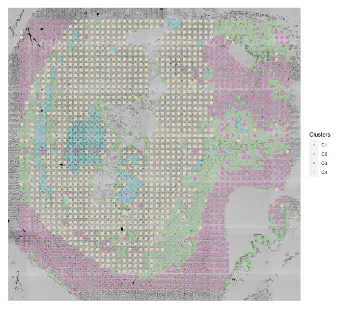
空间 ATAC-seq UMAP 降维聚类图 (Extend Fig.4.b)
cols4 <- c("#6ADCD6", "#93D481", "#D683B7", "#DCD5AF" )
names(cols4) <- c("C1","C2","C3","C4")
p4 <- plotEmbedding(
proj_in_tissue,
colorBy = "cellColData",
embedding = "UMAP",
name = "Clusters",pal = cols4, size = 0.3)
ggsave(file = "./2023_xunyin_fig/4_clusters_UMAP.png", plot=p4, width=10, height=8)
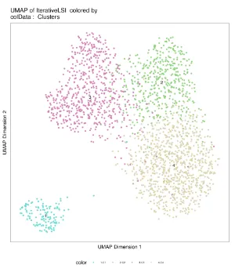
Marker Feature 空间表达可视化 (Extend Fig.4.c)
## marker feature可视化(图4c)
features <- c("Slc4a1", "Nova2", "Il1rapl1", "Rarg")
feature <- "Il1rapl1"
DefaultAssay(spatial.obj) <- "Spatial"
p2_1 <- SpatialDimPlot_new(spatial.obj, features =feature, image.alpha = 1,
facet.highlight = TRUE, pt.size.factor = 2, alpha = c(0.8,0.7), stroke = 0)
p2_1$layers[[1]]$aes_params <- c(p2_1$layers[[1]]$aes_params, shape=22)
p2_1
ggsave(file = "./2023_xunyin_fig/4-Il1rapl1.png", plot=p2_1, width=10, height=8)
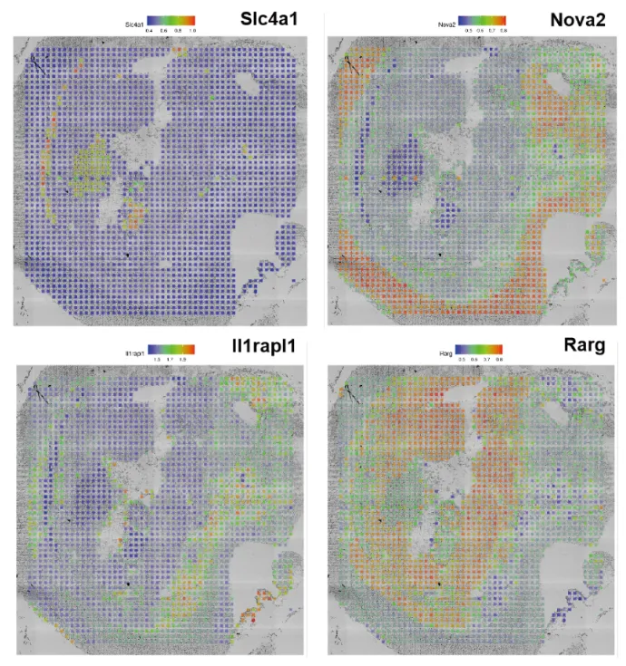
整合 E11.5 时期的 scRNA-seq和空间 ATAC-seq 数据. (Extend Fig.4.d)
## RNA 整合可可视化(Extend Fig.4d)
### RNA combine对象
combined_obj <- readRDS("./seurat_int/combined_obj.rds")
Idents(combined_obj) <- "Main_cell_type"
celltype <- c("Excitatory neurons", "Primitive erythroid lineage", "Radial glia",
"Postmitotic premature neurons","Inhibitory neuron progenitors",
"Connective tissue progenitors","Early mesenchyme",
"Osteoblasts","Jaw and tooth progenitors")
celltype_hig_cols <- c("#A99B3A","#69AB36", "#4DAAE9","#55BA7F","#54B5BF","#CF9533","#B0A133","#BC82F7","#22c9c5")
celltype_cols <- rep("grey",37)
names(celltype_cols) <- names(table(combined_obj@meta.data$Main_cell_type))
celltype_cols[celltype] <- celltype_hig_cols
p <- DimPlot(
object = combined_obj,
reduction = "umap",
group.by = "Main_cell_type",
# label = T
cols = celltype_cols
# cells.highlight=colnames(spatial.obj)
)
ggsave(file = "./2023_xunyin_fig/4-MOCA_RNA_umap.png", plot=p, width=12, height=8)
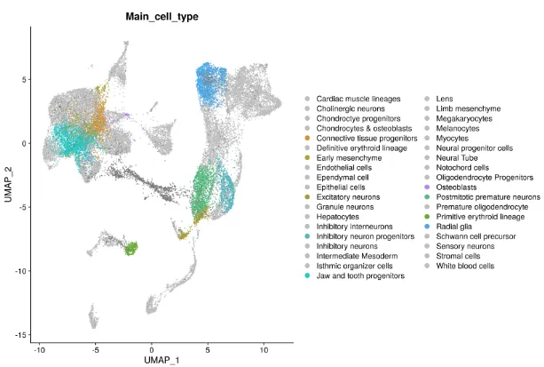
### ATAC this work
combined_obj <- readRDS('./seurat_int/combined_obj.rds')
color_all_celltype <- c("#e87d72", "#e3835b", "#dc8940", "#d48132","#010101", "#c19933", "#010101", "#a9a333", "#9ba734" , "#8bab34", "#010101", "#63b234", "#53b643", "#55b95d", "#010101", "#56bc87", "#56bd9a", "#56beab", "#010101", "#54bcca", "#53b9d8", "#51b5e4", "#4dafee","#4aa9f7", "#52a1f8", "799af8", "#9691f8", "#ad88f8", "#010101", "#010101", "#dc72e8", "#010101", "#010101", "#ed6dbe", "#ed6fad", "#ee739b", "#ec7887")
p <- DimPlot(
object = combined_obj,
reduction = "umap",
group.by = "Main_cell_type",
# label = T
cols = color_all_celltype
# cells.highlight=colnames(spatial.obj)
)
p
ggsave(file = "./2023_xunyin_fig/4-ATAC_this_work_umap.png", plot=p, width=12, height=8)
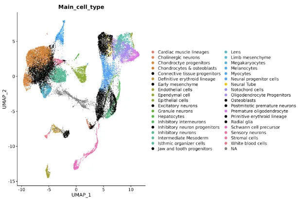
特定细胞类型空间分布 (Extend Fig.4.f)
#### 可视化特定细胞类型空间分布 (图4f)
meta.data.integration <- as.data.frame(getCellColData(ArchRProj = proj_in_tissue))[, c('predictedCell', 'predictedGroup', 'predictedScore')]
new_row_names <- row.names(meta.data.integration)
new_row_names <- unlist(lapply(new_row_names, function(x) gsub(".*#","", x)))
new_row_names <- unlist(lapply(new_row_names, function(x) gsub("-.*","", x)))
row.names(meta.data.integration) <- new_row_names
spatial.obj2 <- AddMetaData(object = spatial.obj, metadata = meta.data.integration)
Idents(spatial.obj2) <- 'predictedGroup'
ids.highlight <- names(table(spatial.obj2$predictedGroup))[1]
# ids.highlight <- "Limb mesenchyme"
ids.highlight <- "Radial glia"
ids.highlight <- "Primitive erythroid lineage"
ids.highlight <- "Postmitotic premature neurons"
ids.highlight <- "Inhibitory neuron progenitors"
p2 <- SpatialDimPlot_new(spatial.obj2, cells.highlight = CellsByIdentities(object = spatial.obj2, idents = ids.highlight),
facet.highlight = TRUE, pt.size.factor = 2.5, alpha = c(1,0), stroke = 0)
p2$layers[[1]]$aes_params <- c(p2$layers[[1]]$aes_params, shape=22)
p2
ggsave(file = "./2023_xunyin_fig/Inhibitory neuron progenitors.png", plot=p2, width=10, height=8)
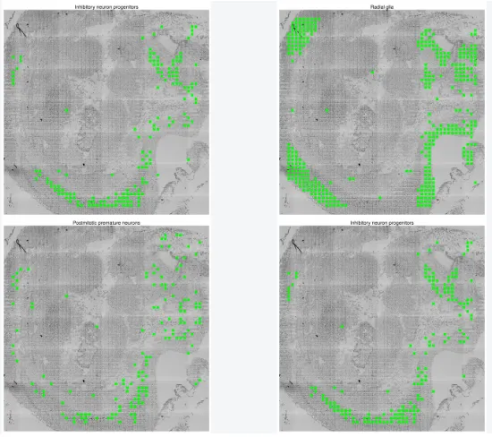
空间拟时序推断-放射状胶质细胞到兴奋性神经元的发育过程. (Extend Fig.4.g)
#### 拟时序分析结果展示 (图4g)
meta.data.integration <- as.data.frame(getCellColData(ArchRProj = projCUTA))[, c('Neuron_U'), drop=FALSE]
new_row_names <- row.names(meta.data.integration)
new_row_names <- unlist(lapply(new_row_names, function(x) gsub(".*#","", x)))
new_row_names <- unlist(lapply(new_row_names, function(x) gsub("-.*","", x)))
row.names(meta.data.integration) <- new_row_names
all(row.names(meta.data.integration) == colnames(spatial.obj))
spatial.obj1 <- AddMetaData(object = spatial.obj, metadata = meta.data.integration)
spatial.obj1$PseudoTime <- spatial.obj1$Neuron_U
p1 <- SpatialPlot_traj(spatial.obj1, features = "PseudoTime", pt.size.factor = 3, image.alpha = 0, stroke = 0) +
theme(legend.position = "right", legend.text=element_text(size=15), legend.title=element_text(size=15))
p1$layers[[1]]$aes_params <- c(p1$layers[[1]]$aes_params, shape=22)
p1
ggsave(file = "./2023_xunyin_fig/4-PseudoTime_traj_splot.png", plot=p1, width=10, height=8)
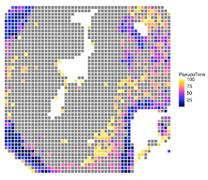
Notch1基因得分的空间表达可视化 (Extend Fig.4.h)
#### Notch1 可视化 (图4h)
p3 <- SpatialPlot_new(spatial.obj1, features = "Notch1", pt.size.factor = 3, min.cutoff = "q10", max.cutoff = "q90", image.alpha = 0, stroke = 0) +
theme(legend.position = "right", legend.text=element_text(size=15), legend.title=element_text(size=15))
p3$layers[[1]]$aes_params <- c(p3$layers[[1]]$aes_params, shape=22)
p3
ggsave(file = "./2023_xunyin_fig/4-Notch1_traj.jpg", plot=p3, width=10, height=8)
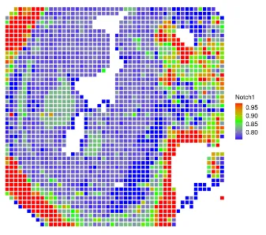
动态基因的拟时序表达轨迹图谱 (Extend Fig.4.i)
trajectory <- c("Radial glia", "Postmitotic premature neurons", "Excitatory neurons")
projCUTA <- addTrajectory(
ArchRProj = proj_in_tissue,
name = "Neuron_U",
groupBy = "predictedGroup",
trajectory = trajectory,
embedding = "UMAP",
force = TRUE
)
projCUTA <- addImputeWeights(projCUTA)
# gene <- c("Sox2", "Pax6", "Ntng1", "Car10")
p1_1 <- plotTrajectory(
projCUTA,
trajectory = "Neuron_U",
colorBy = "GeneIntegrationMatrix",
name = "Sox2",
continuousSet = "horizonExtra"
)
p1_1[[2]]
ggsave(file = "./2023_xunyin_fig/4-Sox2_PseudoTime_traj.png", plot=p1_1[[2]], width=10, height=8)
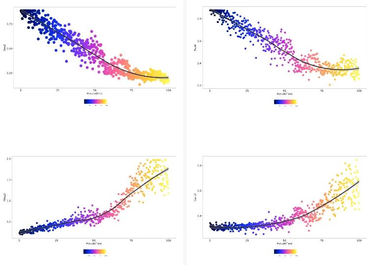
TF基序的拟时序表达动态热图 (径向胶质细胞到兴奋性神经元的变化) (Extend Fig.4.j)
#### 基因相关拟时序表达热图 (图4j)
trajGSM <- getTrajectory(ArchRProj = projCUTA,name = "Neuron_U",
useMatrix = "GeneScoreMatrix",
log2Norm = TRUE)
p2 <- trajectoryHeatmap(trajGSM, pal = paletteContinuous(set= "horizonExtra"))
# ggsave(file = "./2023_xunyin_fig/PseudoTime_traj_heatmap.png", plot=p1, width=10, height=8)
ggsave(file = "./2023_xunyin_fig/4-motif-heatmap_pseudoTime_traj.png", plot=p1, width=10, height=8)
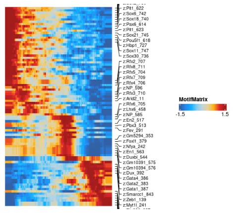
Extend Fig.6 绘图代码
空间降维聚类图谱(Extend Fig.5.b)
#### 可视化cluster注释结果空间分布(图5b)
projCUTA <- loadArchRProject("./projCUTA/")
n_clusters <- length(unique(projCUTA$Clusters))
n_clusters <- length(unique(proj_in_tissue$Clusters))
cols <- ArchRPalettes$stallion[as.character(seq_len(n_clusters))]
names(cols) <- paste0('C', seq_len(n_clusters))
names(cols) <- c("C1","C4","C3","C2")
p4 <- SpatialPlot(spatial.obj, label = FALSE, label.size = 3, group.by = 'Clusters', pt.size.factor = 3, cols = cols, image.alpha = 0, stroke = 0)
p4$layers[[1]]$aes_params <- c(p4$layers[[1]]$aes_params, shape=22)
p4
ggsave(file = "./2023_xunyin_fig/5_cluster_splot.png", plot=p4, width=10, height=8)
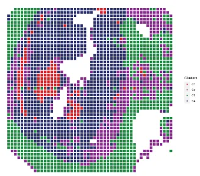
特定features的可及性图谱(Extend Fig.5.c)
###### 可视化trackplot(图5c)
markers <- c("Slc4a1", "Nova2", "Rarg")
p7 <- plotBrowserTrack(
ArchRProj = proj_in_tissue,
groupBy = "Clusters",
geneSymbol = markers,
upstream = 50000,
downstream = 50000
)
grid::grid.newpage()
grid::grid.draw(p7$Nova2)
plotPDF(plotList = p7,
name = "Plot-Tracks-Marker-Genes.pdf",
ArchRProj = proj_in_tissue,
addDOC = FALSE, width = 5, height = 5)
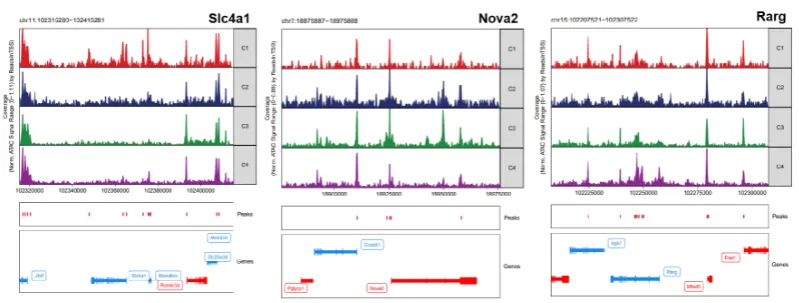
染色质可及性umap降维聚类图谱 (Extend Fig.5.d)
#### clusters UMAP (图5d)
cols5 <- c("#D51F26", "#272E6A", "#208A42", "#89288F" )
names(cols5) <- c("C1","C4","C3","C2")
p5 <- plotEmbedding(
proj_in_tissue,
colorBy = "cellColData",
embedding = "UMAP",
name = "Clusters",pal = cols5, size = 0.3)
ggsave(file = "./2023_xunyin_fig/5_clusters_UMAP.png", plot=p5, width=10, height=8)
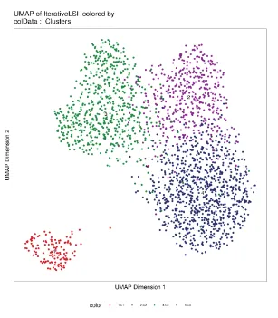
标记基因得分的空间表达图谱 (Extend Fig.5.h)
features <- c("Slc4a1", "Nova2", "Rarg")
feature <- "Rarg"
DefaultAssay(spatial.obj) <- "Spatial"
p3 <- SpatialPlot_new(spatial.obj, features = "Rarg", pt.size.factor = 3, min.cutoff = "q10", max.cutoff = "q90", image.alpha = 0, stroke = 0) +
theme(legend.position = "right", legend.text=element_text(size=15), legend.title=element_text(size=15))
p3$layers[[1]]$aes_params <- c(p3$layers[[1]]$aes_params, shape=22)
p3
ggsave(file = "./2023_xunyin_fig/5_Rarg.png", plot=p3, width=10, height=8)
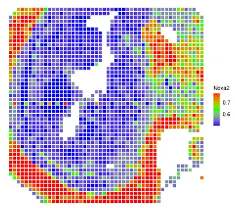
Extend Fig.6 绘图代码
marker peaks 的可视化(Extend Fig.6.a)
heatmapPeaks <- markerHeatmap(
seMarker = markersPeaks,
cutOff = "FDR <= 0.1 & Log2FC >= 0.5",
transpose = TRUE
)
heat_p <- draw(heatmapPeaks,heatmap_legend_side = "bot",annotation_legend_side ="bot")
ggsave(file = "./2023_xunyin_fig/6_heatmapPeaks.png", plot=heat_p, width=10, height=8)
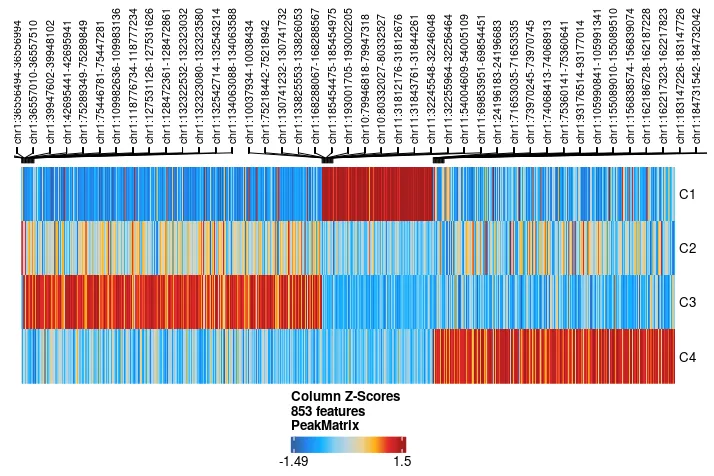
01
二、测试文件及代码
如果你也想学习本文的代码和思路，我们给大家准备好了测试文件和代码。
链接：https://pan.baidu.com/s/1qzbE7swL-pKMBIzRy8ey6Q?pwd=oqi9
提取码：oqi9
附件:
相关绘图函数请预先 source 加载下面的相关函数:
getGeneScore_ArchR.R
SpatialPlot_new.R
SpatialDimPlot_new.R
SpatialPlot_traj.R
02
三、合作方介绍
本次活动由Biomamba生信基地 组织主办、北京寻因生物科技 有限公司独家冠名、科研者之家、西柚云超算联合赞助，设立总价值约50W 的科研助力基金。 北京寻因生物科技有限公司：
北京寻因生物科技有限公司（简称寻因生物）成立于2018年，秉承“用技术温暖生命，预见未来”的企业愿景，致力于全球单细胞市场标准普世化发展，推动单细胞技术在早筛、临床、药研等应用方向的深耕落地，为全球科学家、技术公司及药企工业等客户提供可信赖的高品质单细胞技术服务及实验室建设解决方案。
科研者之家：
科研者之家（www.home-for-researchers）是目前国内最知名的科研工具箱平台，以“科研不停，神器不止”为理念，自2019年上线以来，多款工具火爆科研界，如AI写作助手、Figdraw在线绘图平台、生信零代码平台、AI润色、DLP一键改写降重、中文版Pubmed、课题思路助手等。截止目前，包括Nature，Advanced Materials等顶级期刊在内，科研者之家相关科研工具被论文引用已超2300次之多。
西柚云超算：
西柚云是一家专注于科研共享计算的云服务基建型公司。于2022年推出独立研发的大禹共享型计算系统，具有实例动态迁移（拒绝传统型共享服务器单节点卡顿）、开箱即用的生信环境、每个用户拥有独立的实例和root权限等特性。
03
四、往期作品回顾
干细胞样CD4+ T细胞与自身免疫性血管炎 结直肠癌免疫图谱中的基因表达程序 MLP模型鉴定免疫细胞发育和瘤内T细胞耗竭的单细胞染色质图谱 T Cell单细胞参考图谱 小鼠纹状体单细胞基因变化图谱 人类肾脏snRNA-seq图谱拟时序分析 CellRank的教程重现 胶质瘤相关巨噬细胞scRNA图谱 肝癌单细胞分群marker scRNA揭示T1D骨髓与骨质减少的关系 微环境中肿瘤免疫屏障决定了免疫治疗的效果肝脏发育、成熟的单细胞图谱 胰腺导管腺癌的内异质性和恶性进展scRNA-seq图谱
04
**本次活动最终解释权归主办方所有!******主办方拥有对作品的编辑、宣发权利!

如何联系我们

 公众号后台消息回复不便，这里给大家留一下领取资料及免费服务器(足够支持你完成硕博生涯的生信环境)的微信号 ，方便各位随时交流、提建议（科研任务繁重，回复不及时请见谅）。此外呼声一直很高的交流群 也建好了，欢迎大家入群讨论：
公众号后台消息回复不便，这里给大家留一下领取资料及免费服务器(足够支持你完成硕博生涯的生信环境)的微信号 ，方便各位随时交流、提建议（科研任务繁重，回复不及时请见谅）。此外呼声一直很高的交流群 也建好了，欢迎大家入群讨论：
大家可以阅读完这几篇之后添加给生信入门初学者的小贴士 如何搜索公众号过往发布内容

 您点的每个赞和在看，我都认真当成了喜欢
您点的每个赞和在看，我都认真当成了喜欢